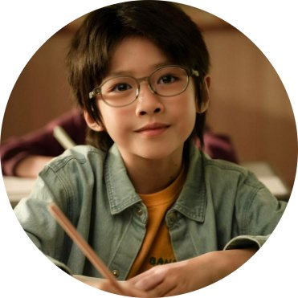
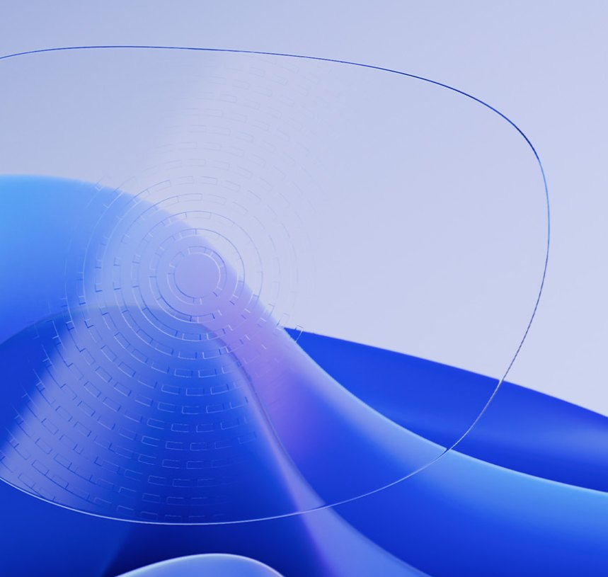
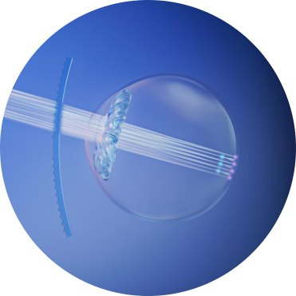
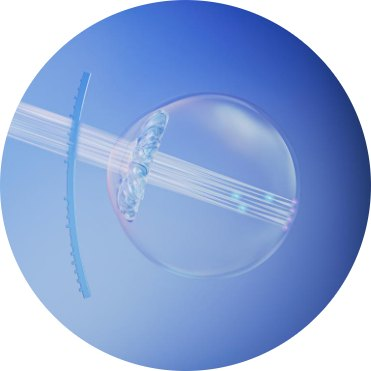
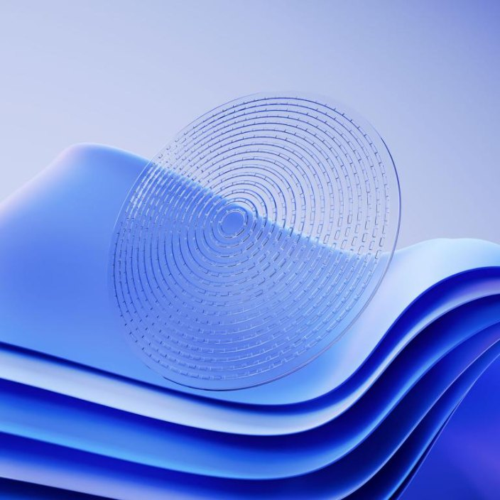
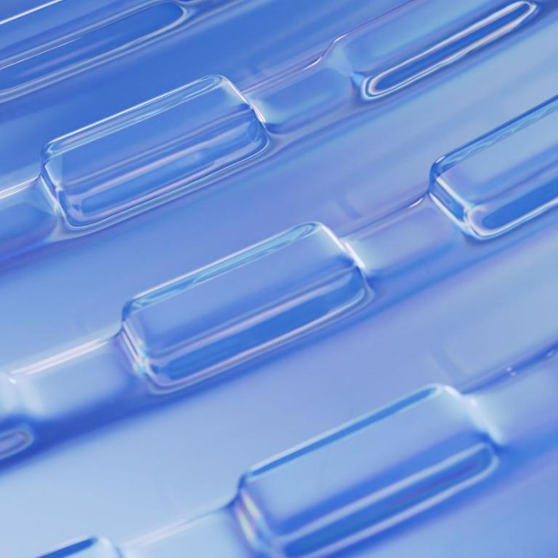
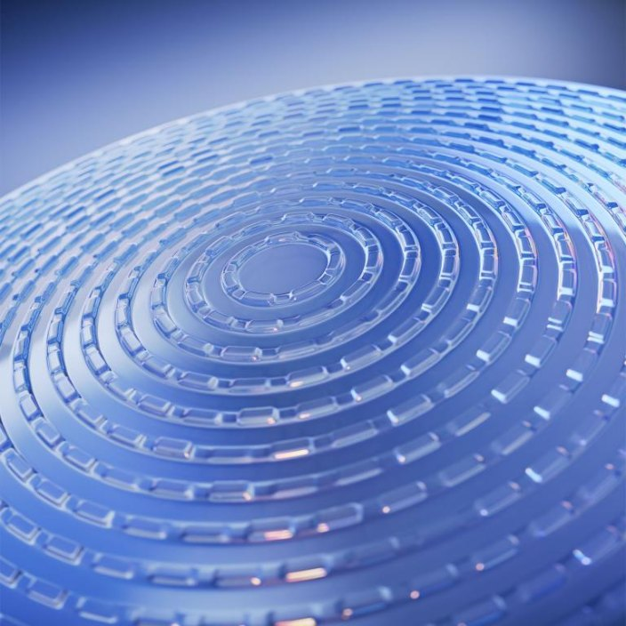
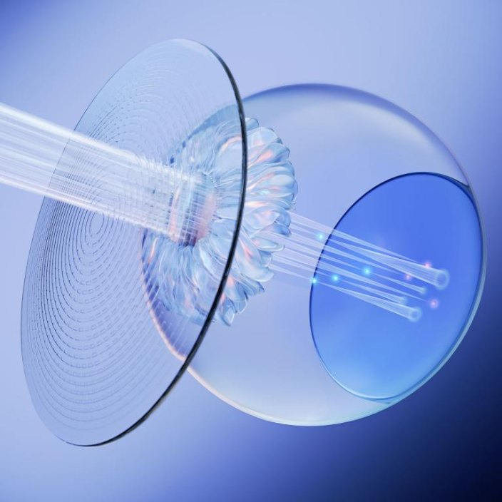
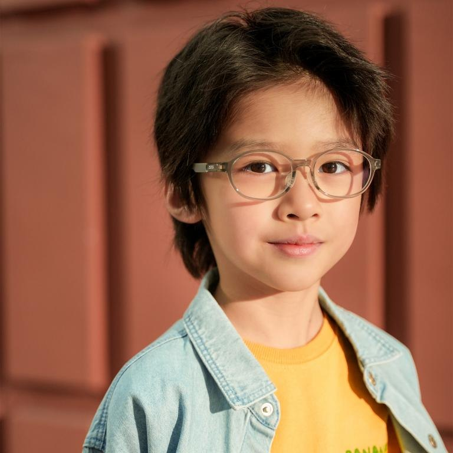

We looked at how kids actually see.
Every day, children see so many visual patterns at different distances and in all kinds of lighting conditions. The demands on their vision are always changing.

ZEISS for Eye Care Professionals
Clinical trials confirm: ZEISS MyoActive lenses slow myopia progression by 0.60 D and axial elongation by 0.22 mm. We studied children's visual behaviour and eye growth, applying these insights to develop ZEISS MyoActive lenses with our patented ZEISS M.O.V.E. technology. The result: MyoActive lenses demonstrate the highest average efficacy in slowing myopia to date.1
We developed ZEISS MyoActive lenses based on proven principles and fundamental new insights from recent myopia research. This new approach represents a real breakthrough in myopia management, with ZEISS being the first to translate Dynamic Signal Theory into lens design.

Every day, children see so many visual patterns at different distances and in all kinds of lighting conditions. The demands on their vision are always changing.

Research shows that creating myopic defocus triggers a retinal signal in the child's eye that can slow eye growth, the main cause of myopia progression in children.

Adding dynamic signals from non-repetitive microstructures to myopic defocus helps retain the retinal response, for effective treatment outcomes that last longer.
slower myopia progression with ZEISS MyoActive lenses.1
reduction in axial elongation thanks to ZEISS MyoActive lenses.1




We explored how today's visual demands affect refractive development and the effectiveness of myopia treatments. These findings contributed to ZEISS MyoActive: the first lens design to incorporate Dynamic Signal Theory through M.O.V.E.TM (Micro Optical Variable Elements) technology. We developed ZEISS MyoActive to correct and control myopia in children over the long run.
Microstructures with different positive powers create varying levels of myopic defocus, creating a variety of different retinal signals.
The non-aligned microstructure layout allows for changing retinal signals as the child's eye naturally moves across the lens. This helps avoid repetitive stimulation.
The microstructure power ranges and layout pattern enable varying levels of myopic defocus. The resulting dynamic retinal signals help slow axial elongation, sustaining retinal responsiveness.
The result: ZEISS MyoActive is the lens design with the highest average efficacy to date.1
Myopia management lenses make the greatest impact on children's vision when effective in lens design AND worn throughout the day. And ZEISS MyoActive lens wearers approve:
